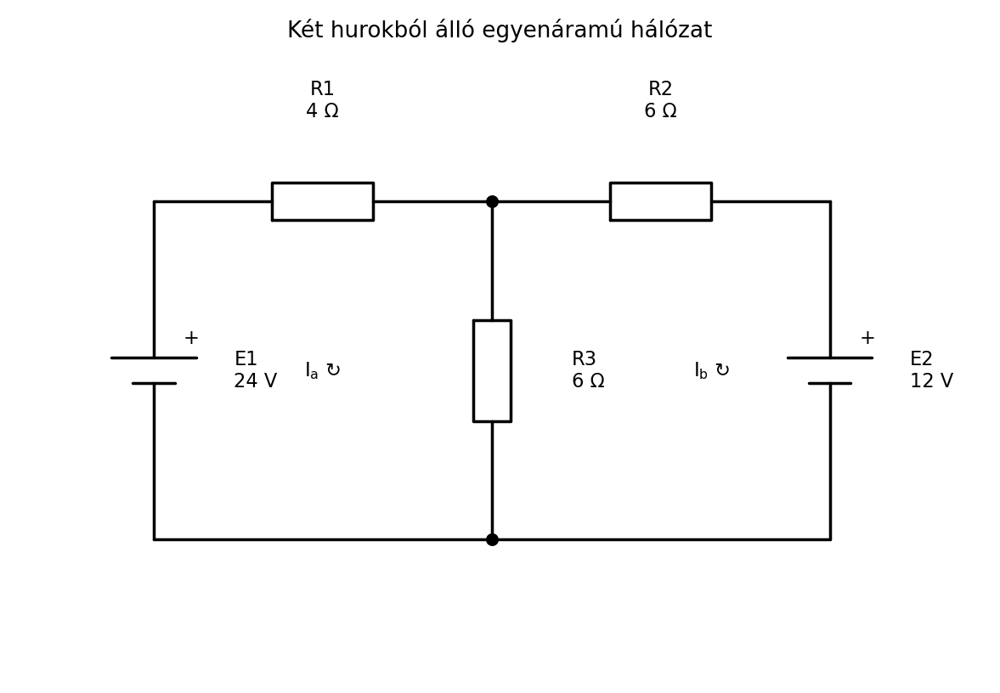
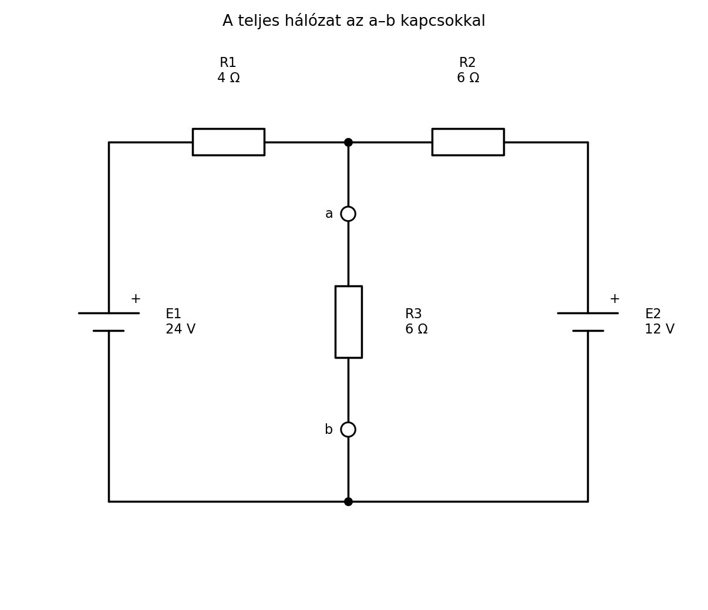
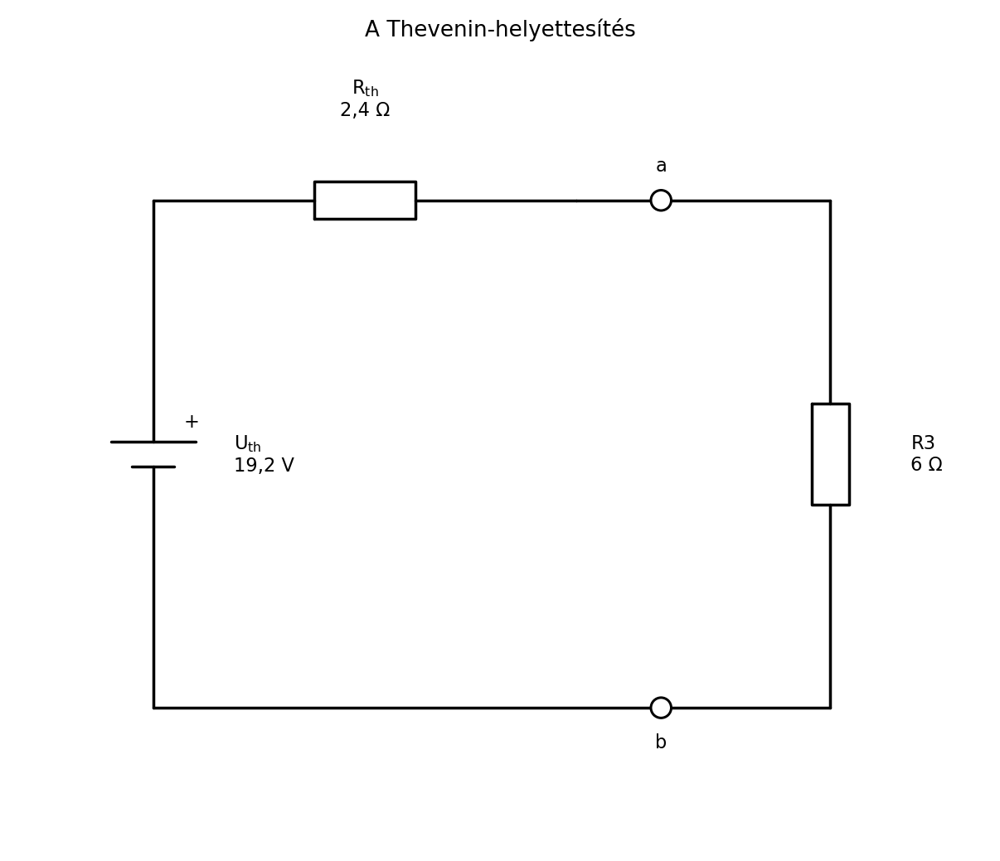
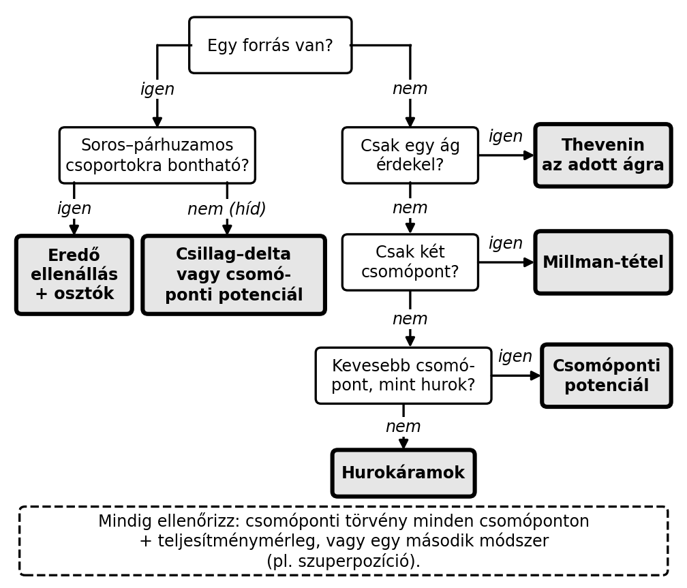

Egy lakáselosztóban a fázis-, a nullavezető és több fogyasztói kör találkozásánál az áramok elágaznak, és a hurokban megjelenő feszültségeséseket már nem tudjuk pusztán soros vagy párhuzamos eredőkkel átlátni. Ugyanez a helyzet, amikor egy kapcsolószekrényben két tápforrás – például hálózati tápegység és tartalék akkumulátor – egyszerre dolgozik, vagy amikor egy hibás bekötés miatt két kör egy közös ponton összeér. A Kirchhoff-törvények és a hurokáramok módszere az az általános eszköz, amellyel a csomóponti áramokat és a hurkokban fellépő feszültségeséseket szisztematikusan felírjuk, és a hibakeresés során a mért értékeket számszerűen ellenőrizzük.
Képzeljünk el egy egyenáramú hálózatot két feszültségforrással és három ellenállással. A bal oldali forrás táplál egy ellenálláson keresztül egy közös csomópontot, a jobb oldali forrás pedig egy másik ellenálláson át ugyanarra a csomópontra csatlakozik; a csomópontból egy függőleges ellenállás vezet a közös visszavezetésre.

A rajz bal hurokja: E1 – R1 – R3. A jobb hurok: E2 – R2 – R3. A két hurok közös ága az R3, ezért az R3-ban a két hurok árama egyszerre jelenik meg. A hurokegyenletekkel ezt a közös ágat is kezeljük.
Definíció. Egy villamos csomópontba befolyó áramok előjeles összege nulla:
ahol a befolyó áramokat például pozitívnak, a kifolyókat negatívnak vesszük – a választás lehet fordított is, de egy feladaton belül egységesnek kell maradnia.
Törvény. A csomóponti törvény a töltésmegmaradást fejezi ki: egy csomópontban töltés nem halmozódhat fel, így ami befolyik, annak ugyanannyi ki is kell folynia.
A gyakorlati szerelői gondolat: a fogyasztásmérő utáni fő nullavezetőben ugyanakkora áram folyik, mint a fázisvezetők áramainak vektoros összege, ha a hálózat tökéletes és nincs szivárgó áram. Egy hibás, rosszul kötött csomópontnál ez a mérleg felborul.
Definíció. Egy zárt hurok mentén a feszültségek előjeles összege nulla:
A feszültségforrás feszültségét akkor vesszük pozitívnak, ha a hurok körbejárási iránya a negatív kapocstól a pozitív felé halad, vagyis a forrás emeli a potenciált. Az ellenállásokon a körbejárási irányban folyó áram feszültségesést hoz létre, ezért az ellenállás feszültségét a körbejárás iránya szerint vesszük pozitívnak.
Törvény. A huroktörvény a potenciál egyértékűségét fejezi ki: ha egy töltést egy zárt hurkon végigviszünk, a potenciál visszaáll a kiindulási értékre.
A szerelői gyakorlatban ezt a törvényt akkor használjuk, amikor a mérőműszerrel ellenőrizzük, hogy a táplálás feszültsége egyenlő a fogyasztók és a vezetékek feszültségeséseinek összegével. Ha a számított hurokösszeg nem nulla, a kapcsolásban hiba van.
A hurokáramok módszere a huroktörvényt rendszerezetten alkalmazza. Két egymás melletti „ablakhurok” esetén a lépések:
Törvény. Lineáris hálózatban több forrás együttes hatása egyenlő a források egyenkénti hatásának összegével. A vizsgált forrás hatását úgy számoljuk, hogy a többi feszültségforrást rövidzárral helyettesítjük, a kikapcsolt áramforrásokat pedig szakadással.
A módszer akkor hasznos, ha egy-egy forrás hatására a hálózat soros/párhuzamos egyszerűsítéssel könnyebben átlátható, mint a teljes hurokegyenlet-rendszer.
Ugyanezt a példát oldjuk meg szuperpozícióval.
E2-t rövidzárral helyettesítjük. Ekkor a jobb oldali forrás helyén a felső sín és az alsó sín közvetlenül összekapcsolódik, ezért R2 és R3 párhuzamosan kapcsolódik, és ezekkel sorban van R1. Az eredő:
Az E1 árama:
Ez az áram folyik R1-en jobbra. A csomóponton R2 és R3 azonos ellenállású, ezért az áram feleződik:
Az R2 árama jobbra, az R3 árama lefelé folyik.
Most E1-et helyettesítjük rövidzárral. Ilyenkor R1 és R3 párhuzamosan kapcsolódik, és ezekkel sorban van R2. Az eredő:
Az E2 árama:
Ez az áram R2-n balra folyik. A párhuzamos R1 és R3 áramosztásából:
Az R1 árama balra, az R3 árama lefelé folyik.
R1 árama jobbra:
R2 árama jobbra:
R3 árama lefelé:
A kapott értékek ugyanazok, mint a hurokáramok módszerénél. A szuperpozíció tehát ellenőrzésre is kiváló, mert más úton kapjuk ugyanazt az eredményt.
A szerelő a műszer egyik zsinórját egy közös ponton tartja, a másikkal pedig sorra méri a többi pont feszültségét: potenciálokat mér. A csomóponti potenciálok módszere ugyanígy gondolkodik. A fejezet kapcsolásán két hurok, de a közös sínen kívül csak egyetlen további csomópont van, ezért egy ismeretlen is elég.
Szabály (eljárás).
Összefüggés. Ha két csomópont közé ág kapcsolódik, és minden ágban egy forrás (lehet nulla) és vele sorosan egy ellenállás van, a két csomópont közötti feszültség:
Ez az egyetlen csomóponti egyenlet megoldott alakja; az ellentétes polaritású forrás negatív előjellel szerepel.
Egy ideális 12 V-os forrás a T csomópontot a 0 V-os alsó sínhez képest 12 V-on tartja; (T–A), (A–0), (T–B), (B–0), a hídágban (A–B). A rajz felépítése a Vegyes kapcsolások és eredő ellenállás hídrajzával azonos. Ismeretlen csak és :
Rendezve: és . A megoldás , , a hídág árama (A-ból B felé). Ugyanezt adja a csillag–delta átalakítás is; a csomóponti módszernél azonban nem kell a kapcsolást átrajzolni. A 3. feladat hálózata ugyanígy egyetlen egyenlet; ezt a megoldást a Megoldások között, a 3. feladatnál találod.
Sokszor csak egyetlen ág érdekel: mi történik a terheléssel, ha az értéke változik? Ilyenkor a hálózat többi részét egyszer kell kiszámolni, és két adattal helyettesíteni.
Törvény (Thevenin). Bármely lineáris, kétpólusú hálózatrész egy kapocspár felől helyettesíthető egy ideális feszültségforrással és egy vele soros ellenállással:
Norton-alak. Ugyanez a hálózatrész helyettesíthető egy ideális áramforrással (a kapcsok rövidzárási árama) és vele párhuzamos ellenállással. Az ideális áramforrást a Valódi feszültségforrás: üresjárás, rövidzárás és illesztés alfejezet vezeti be.

1. lépés – . R3-at levéve egyetlen hurok marad: , ezért
2. lépés – . A két forrás helyén rövidzár: .
3. lépés – a terhelés visszakötése.
ami egyezik a korábbi eredménnyel. A Norton-alakban .

A haszon: R3 változtatásakor egyetlen osztás elég. Számold ki , 6 és 12 Ω-ra! (Kulcs: ; ; .)
Ha a hálózat belsejét nem ismerjük, két különböző terheléssel mért kapocsfeszültségből is meghatározható:
Kitekintés a szakmára. A hurokimpedancia-mérés is helyettesítő generátoros gondolat: a műszer ismert terheléssel megméri a feszültségesést, és ebből a hálózat „belső” impedanciáját számítja; a zárlati áramot a Vezetékvédelem, koordináció és zárlati áram alfejezet használja.
A számítás ellenőrzése a munkában sem maradhat el. Két egyszerű ellenőrzési lehetőség:
A feladatgyűjteménybeli (4.4) példa teljesítménymérlege:
Az E2 forrás teljesítménye negatív, mert az áram a pozitív kapcsán befelé folyik: itt a forrás töltődik, nem ad le teljesítményt. Ez nem hiba, hanem a két forrás feszültségviszonyainak következménye.
Az ellenállásokon:
A források összege:
az ellenállások összege:
A kerekítések miatt minimális eltérés elfogadható. Ha az eltérés jelentős, az egyenlet felírását vagy a behelyettesítést kell ellenőrizni.
Szabvány. A Kirchhoff-törvények a villamos hálózatok leírásának általános fizikai alapjai, ezért a kisfeszültségű berendezések ellenőrzésekor a zárlati áramok és feszültségesések egyszerű hálózatrészekre való számítása is ezekre épül. Az MSZ HD 60364 sorozat ellenőrzési és méretezési követelményeihez a mindenkor hatályos kiadást kell figyelembe venni, a gyártói adatlapokkal együtt (ellenőrizendő: aktuális szabványkiadás és a konkrét berendezés adatai).
Valós eset. Egy karbantartó egy 24 V-os tápegység és egy 12 V-os tartalék akkumulátor párhuzamos üzemét ellenőrizte: közös ellenállás-hálózaton keresztül tápláltak egy vezérlőmodult. A műszerrel mért áramok nem feleltek meg a kapcsolási rajz alapján várt értékeknek. A szerelő a csomóponti törvénnyel ellenőrizte a csomópontba befolyó és kifolyó áramokat: a főágban 2,6 A-t mért, a két leágazásban 0,3 A-t és 2,3 A-t, ami éppen kiadta a csomóponti mérleget. A feszültségesést a hurokegyenlettel is kiszámolta, és a mért értékekkel összevetette. Kiderült, hogy az akkumulátor nem adott le teljesítményt, hanem a tápegység töltötte (a negatív teljesítmény a mérlegben ezt jelzi) – ellenőrizetlen töltőáram folyt, és az akkumulátor melegedett. A hibát töltésvezérlő, illetve diódás leválasztás beépítésével oldották meg. Két különböző feszültségű tápegységet visszáram-védelem nélkül soha ne köss össze: a kisebb feszültségű kimenetébe folyó áram tönkreteheti.
A példa tanulsága: a Kirchhoff-törvények nem elméleti játékok, hanem a mindennapi hibakeresés ellenőrző eszközei.
Hiba. A huroktörvénynél a feszültségforrás előjelét a körbejárási iránytól függetlenül mindig pozitívnak veszik. Ha a körbejárás a pozitív kapocs felől a negatív felé halad, a forrás feszültsége negatív. A helyes gyakorlat: először rögzítsük a hurok körbejárási irányát, majd minden forráson aszerint döntsük el az előjelet, hogy a negatív pólustól a pozitív felé haladunk-e.
Hiba. Szuperpozíciónál a kikapcsolt feszültségforrást szakadásként kezelik. A feszültségforrást rövidzárral, az áramforrást szakadással kell helyettesíteni. Ha valaki szakadást tesz be feszültségforrás helyére, a hálózat szerkezete megváltozik, és az eredmény hibás lesz.
Hiba. A csomóponti törvénynél a befolyó és kifolyó áramok előjelét következetlenül váltogatják. Az egyenlet felírása előtt meg kell állapodni: például a csomópontba befolyó áram pozitív, a kifolyó negatív, és ezt a teljes feladatban tartani kell.
Mindig a legegyszerűbb eszközzel kezdj: előbb nézd meg a rajzot, és csak akkor írj fel egyenletrendszert, ha a hálózat nem egyszerűsíthető. A döntés menetét az ábra, a módszerek jellemzőit a táblázat mutatja.

| Módszer | Mikor? | Ismeretlenek | Tipikus hiba | Ellenőrzés |
|---|---|---|---|---|
| Feszültségosztó, áramosztó | egy soros ág vagy két párhuzamos ág | 0 | a terhelés kihagyása | részek összege |
| Eredő ellenállás | egy forrás, soros–párhuzamos csoportok | 0 | rossz csoportosítás | teljesítménymérleg |
| Csillag–delta | egy forrás, kiegyenlítetlen híd | 0 | rossz kapocspár | csomóponti módszer |
| Szuperpozíció | több forrás, egyszerű részhálózatok | forrásonként 1 számítás | forrás helyén szakadás | előjeles összeg, KCL |
| Hurokáramok | kevés hurok | független hurkok száma | előjel a közös ágon | KCL, mérleg |
| Csomóponti potenciál | kevesebb csomópont, mint hurok | csomópontok száma mínusz 1 | forrás előjele | mérleg |
| Millman | két csomópont, párhuzamos ágak | 1 (képletből) | ellentétes forrás előjele | KCL |
| Thevenin, Norton | egy ág érdekel, változó terhelés | , | forrás bent marad -nál | teljes hálózat számítása |
Gyakorlás: ennek az alfejezetnek a kidolgozott példái, gyakorlatai és megoldással ellátott feladatai az Összefoglaló feladatgyűjtemény villanyszerelő tanulóknak című kötet 4.4 szakaszában találhatók.
A Kirchhoff-törvények a villamos hálózatok rendszerezett számításának alapjai. Az I. törvény szerint egy csomópontba befolyó és kifolyó áramok előjeles összege nulla, mert töltés nem tűnhet el. A II. törvény szerint egy zárt hurok mentén a feszültségek előjeles összege nulla, mert a potenciál körbejárás után visszaáll. A hurokáramok módszere két egymás melletti hurokra úgy alkalmazza ezt, hogy minden hurokhoz felveszünk egy-egy hurokáramot, a közös ágon a különbségüket vesszük, majd megoldjuk a kétismeretlenes egyenletrendszert. A szuperpozíció elve szerint több forrás hatása a források egyenkénti hatásának összege, ahol a kikapcsolt feszültségforrás rövidzár. Az eredményt teljesítménymérleggel ellenőrizzük: a források leadott teljesítményeinek algebrai összege megegyezik az ellenállásokon disszipált teljesítményekkel. A csomóponti potenciálok módszere (két csomópontnál Millman-tétel) kevés csomópontnál gyorsabb; a Thevenin–Norton-helyettesítés egyetlen ágat vizsgál kényelmesen; a választásban a „Melyik módszert válasszam?” szakasz döntési fája segít. Továbbvitt eredmény. A csomóponti és hurokegyenletek felírásának módszerét a későbbi fejezetekben a váltakozó áramú hálózatoknál, a hurokimpedancia és a zárlati áram számításánál, valamint a gépek és elosztók áramviszonyainak elemzésénél használjuk fel: akik a Váltakozó áram és az Áramütés elleni védelem fejezeteket tanulják, erre a módszerre építenek. A szerelői munka során a hálózatszámítás mindig kapcsolódik a méréshez: a számított és mért értékek eltérése hibát jelez.
A fejezet klasszikus hálózatelméleti anyag, ezért szabványhivatkozást csak ott használtam, ahol az a gyakorlati ellenőrzéshez kapcsolódik. A konkrét szerelési és ellenőrzési határértékeket a hatályos MSZ HD 60364 sorozat és a gyártói adatlapok szerint kell ellenőrizni.